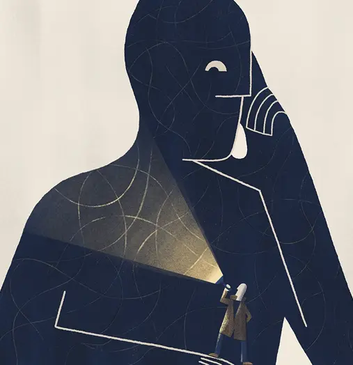
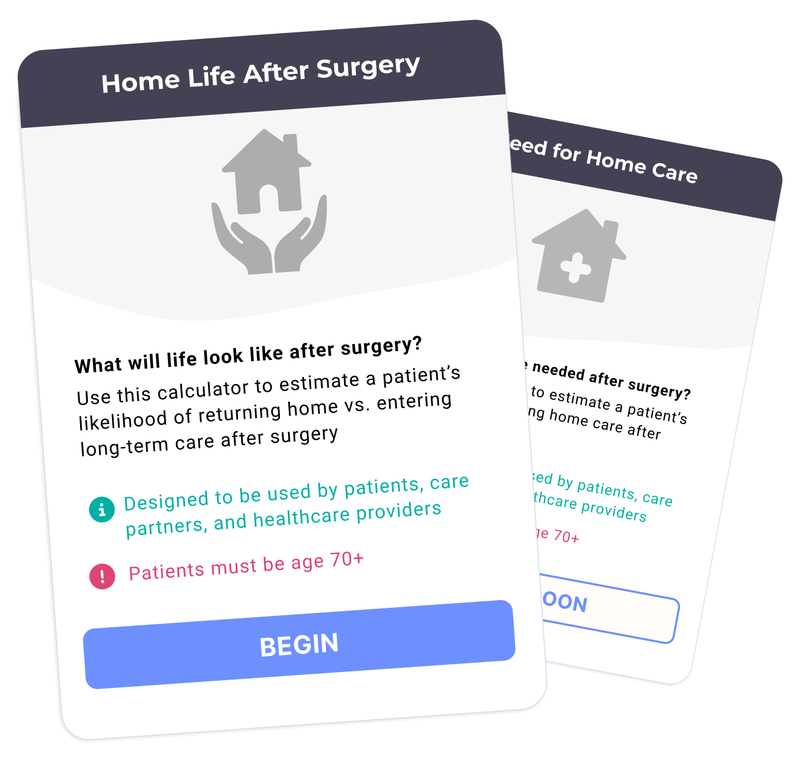
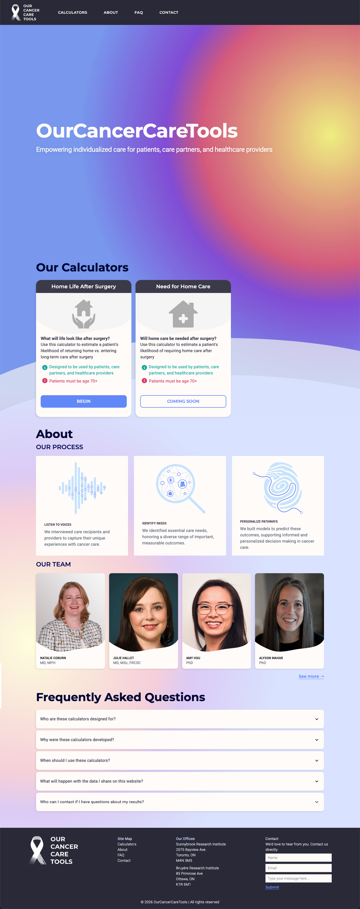

A website hosting risk calculators that predict life after a cancer diagnosis
Empower people impacted by cancer with tailored information to help shape their cancer care
UX Researcher
UX Designer
Webflow Developer
Figma
Webflow
After a cancer diagnosis, survival is typically treated as the default goal.
Some patients, however, prioritize quality of life over quantity of life—identity over longevity.
When cancer care overlooks personal preferences, it can become misaligned with what matters most to individuals.

OurCancerCareTools is an online hub that empowers cancer patients with personalized information to help inform their care choices.
Here, we leverage predictive algorithms to calculate risks around particular treatment decisions so patients can pursue options that align with their values.
Unlike many existing online tools that predict survival alone, our tools center around outcomes related to quality of life.

Cancer risk calculators are widely available, which created a clear challenge from the onset: earning trust in a crowded landscape.
How could we ensure our platform was uniquely appealing to patients who have a sea of digital tools at their fingertips?

Blah

Blah
Blah
Blah

Blah
Bah

blah

If you're interested in collaborating, please contact me at annaphoenixg@gmail.com
Be well!